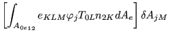
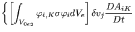
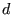
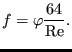
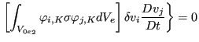
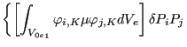
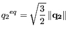
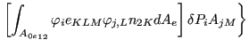

With the *GREEN keyword card Green functions  can be calculated satisfying
|  | (441) |
where  is the stiffness matrix of the structure,  the mass matrix,  a scalar frequency and  a unit force at degree of freedom . The degree of freedom corresponds to a specific coordinate direction in a specific node. For  the Green function is the static answer of a system to a unit force at some location in one of the global coordinate directions. Usually, these Green functions are used in subsequent calculations. The Green function procedure is a linear perturbation procedure, i.e. nonlinear behavior from a previous *STATIC step can be taken into account (through the appropriately modified stiffness matrix) using the PERTURBATION parameter on the *STEP card in the Green step.
The degrees of freedom in which a unit force is to be applied can be defined by use of the *CLOAD card (the force value specified by the user is immaterial, a unit value is taken). is a parameter on the *CLOAD card.
If the input deck is stored in the file ``problem.inp'', where ``problem'' stands for any name, the Green functions, the stiffness matrix and the mass matrix are stored in binary form in a "problem.eig" file for further use (e.g. in a sensitivity step). Furthermore, the Green functions can be stored in the ``problem.frd'' file, using the standard *NODE FILE or *NODE OUTPUT card.
The sensitivity of the Green functions can be calculated in a subsequent *SENSITIVITY step in which the objective function is set to GREEN (cf. *OBJECTIVE).